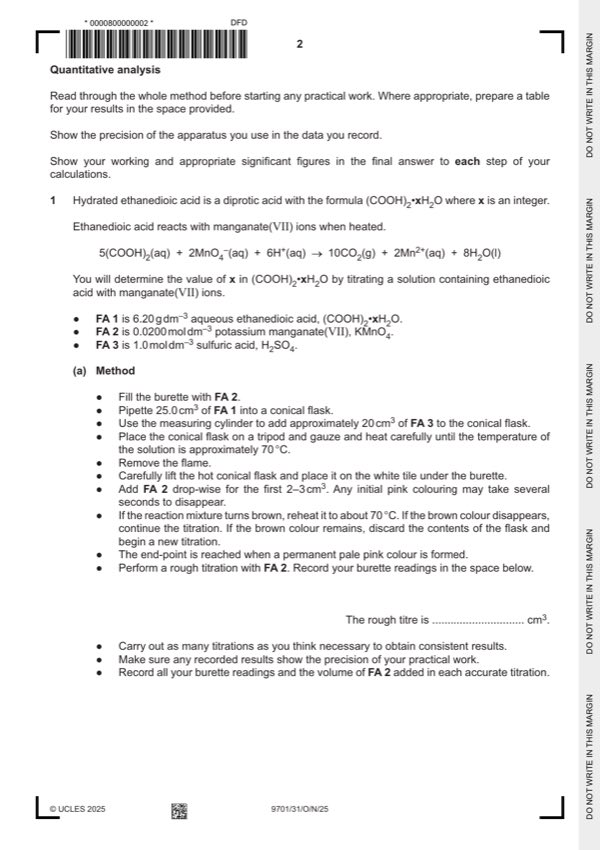
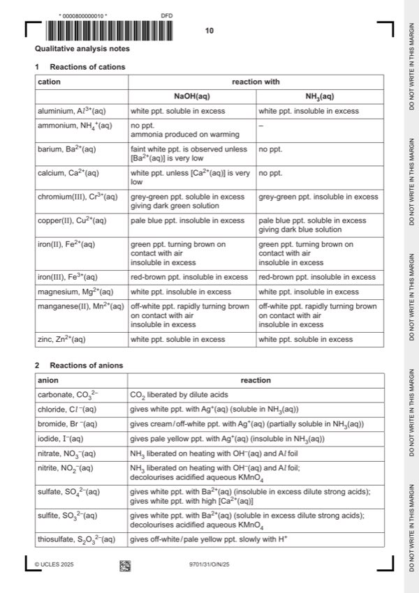

Question 1

Original paper page 2

Original paper page 10
Part 1(a) — solution
- two burette readings AND titre for the rough titration
- initial and final burette readings for two (or more) accurate titrations
- initial / start AND (burette) reading / volume
- final / end AND (burette) reading / volume
- titre OR volume used/added/ OR FA 2 used/added
- unit: / cm3 OR (cm3) OR in cm3 (for each heading) OR cm3 unit given for each volume recorded
- two (or more) accurate identical titres (ignoring any that are labelled ‘rough’) , then
- two (or more) accurate titres within 0.05 cm3, then
- two(or more) accurate titres within 0.10 cm3, etc
Mark points
- two burette readings AND titre for the rough titration
- initial and final burette readings for two (or more) accurate titrations
- initial / start AND (burette) reading / volume
- final / end AND (burette) reading / volume
- titre OR volume used/added/ OR FA 2 used/added
- unit: / cm3 OR (cm3) OR in cm3 (for each heading) OR cm3 unit given for each volume recorded
- two (or more) accurate identical titres (ignoring any that are labelled ‘rough’) , then
- two (or more) accurate titres within 0.05 cm3, then
- two(or more) accurate titres within 0.10 cm3, etc
Part 1(b) — solution
- Candidate must take the average of two (or more) titres that are within a total spread of not more than 0.20 cm3
- Working/explanation must be shown OR ticks must be put next to the two (or more) accurate readings selected
- The mean should be quoted to 2 dp and be rounded to nearest 0.01 cm3. (e.g. 26.675 cm3 must be rounded to
Mark points
- Candidate must take the average of two (or more) titres that are within a total spread of not more than 0.20 cm3
- Working/explanation must be shown OR ticks must be put next to the two (or more) accurate readings selected
- The mean should be quoted to 2 dp and be rounded to nearest 0.01 cm3. (e.g. 26.675 cm3 must be rounded to
Part 1(c)(i) — solution
All answers to (c)(ii), (c)(iii) and (c)(iv) to 3 − 4 sf 1
Mark points
- Include the ideas shown in the solution above.
Part 1(c)(ii) — solution
- amount of manganate( VII) = 0.02 volume in (b) / 1000 mol
Mark points
- amount of manganate( VII) = 0.02 volume in (b) / 1000 mol
Part 1(c)(iii) — solution
- [M1] Amount of ethanedioic acid = (c)(ii) 5 / 2 mol
- [M2] Concentration of FA 1 = (c)(ii) 5 / 2 1000 / 25 mol dm−3
Mark points
- [M1] Amount of ethanedioic acid = (c)(ii) 5 / 2 mol
- [M2] Concentration of FA 1 = (c)(ii) 5 / 2 1000 / 25 mol dm−3
Part 1(c)(iv) — solution
- Mr = 6.2(0) / (c)(iii)
Mark points
- Mr = 6.2(0) / (c)(iii)
Part 1(c)(v) — solution
Answer: AND
(Mr − 90) / 18 1
AND
correctly calculates answer as integer
Mark points
- Correct result: AND
Part 1(d) — solution
H+ needed in the reaction / H+ used in / appears in the equation 1
University Press & Assessment 2025 Page 8 of 13
9701/31 Cambridge International AS & A Level – Mark Scheme October/November 2025
Mark points
- Include the ideas shown in the solution above.